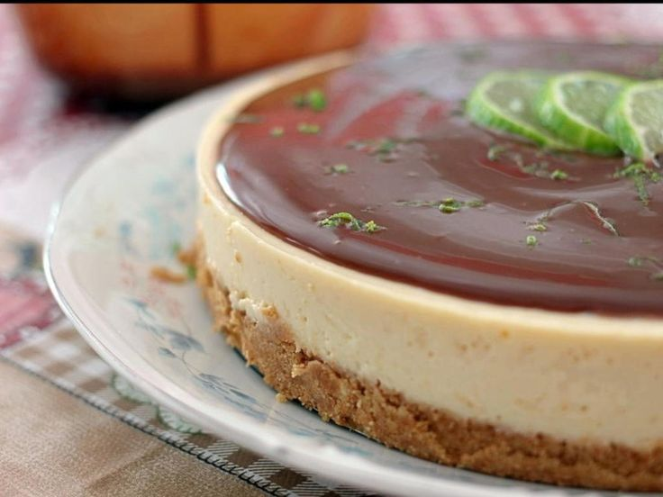

• Meio pacote de biscoito maisena
•50 gramas de margarina
• 2 colheres de sopa de leite
• 500 gramas de chocolate ao leite
• 1 colher de sobremesa de manteiga
• 1 caixinha de creme de leite
• 2 colheres de sopa de creme de avelã
• 1 lata de leite condensado
• Meia xícara de chá de suco de limão
• 1 caixinha de creme de leite
• Raspas de limão o quanto baste para decorar
• No liquidificador, triture o biscoito maisena.
• Em uma tigela, misture o biscoito triturado, a margarina e o leite, até formar uma farofa bem úmida.
• Forre o fundo e as laterais de uma fôrma de 24 centímetros de diâmetro.
• Asse no forno preaquecido a 200ºC durante 10 minutos. Reserve.
• Derreta o chocolate em banho--maria, misture a manteiga, o creme de leite e o creme de avelã.
• Coloque sobre a massa, já assada, e, com uma colher, faça movimentos formando ondas.
• Leve à geladeira até endurecer.
• No liquidificador, bata o leite condensado, o suco de limão, o creme de leite e a gelatina, já preparada de acordo com as instruções da embalagem.
• Coloque sobre o creme de chocolate e leve à geladeira até endurecer.
• Decore com raspas de casca de limão. Aproveite!
